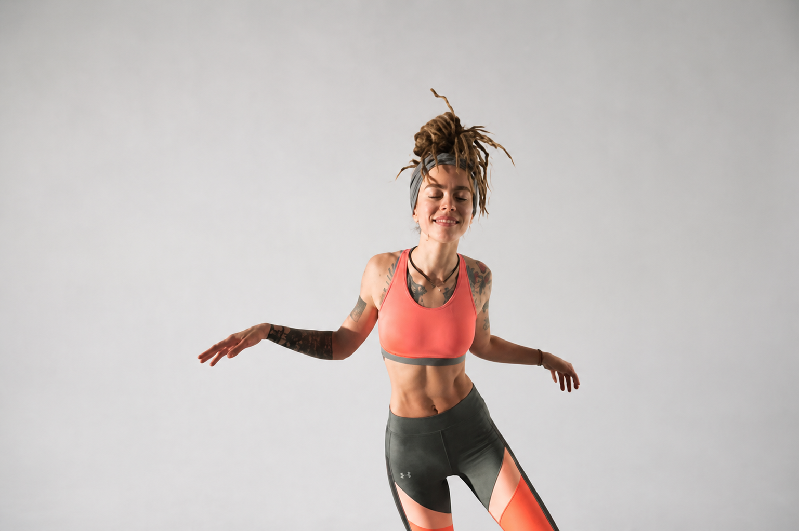
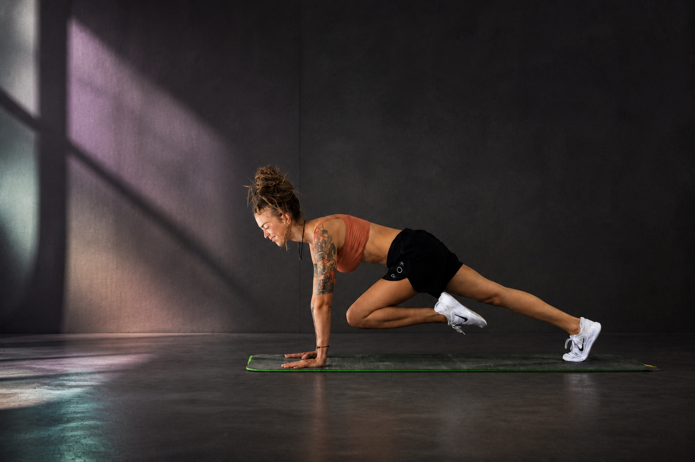
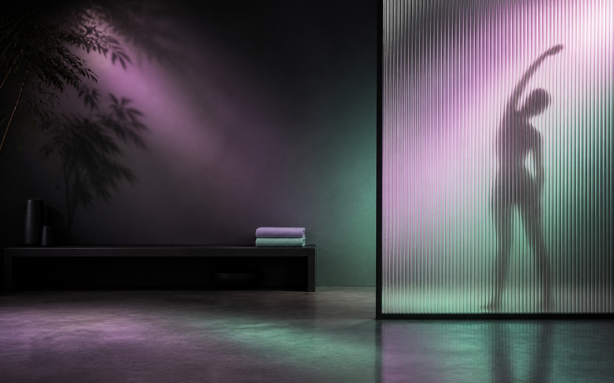
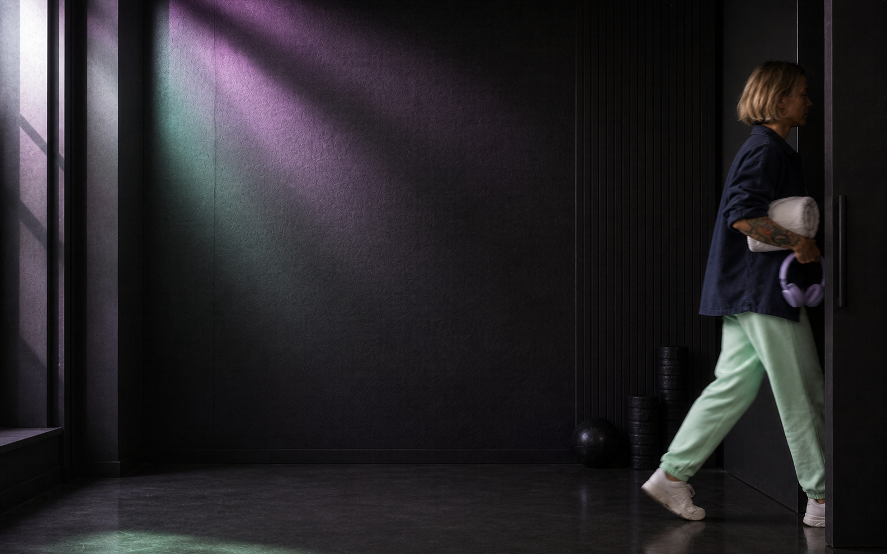
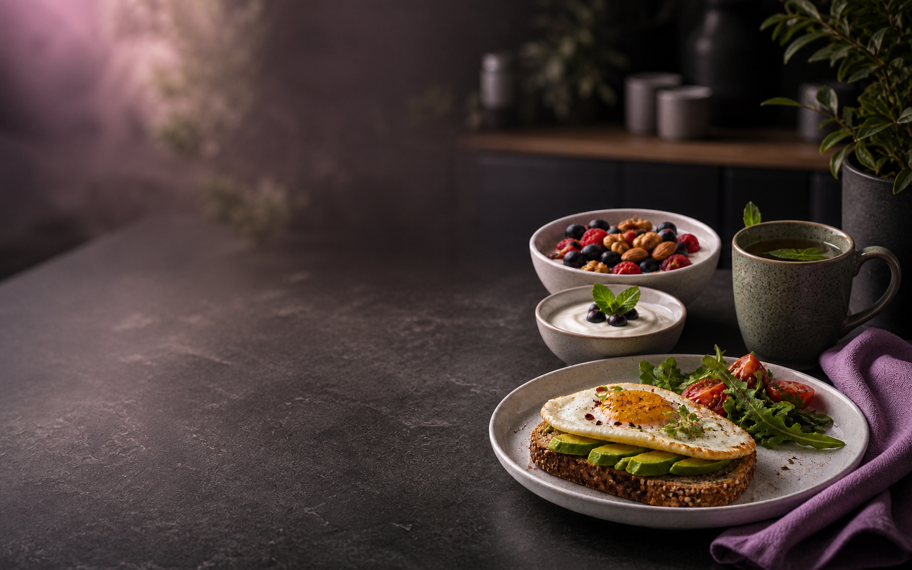
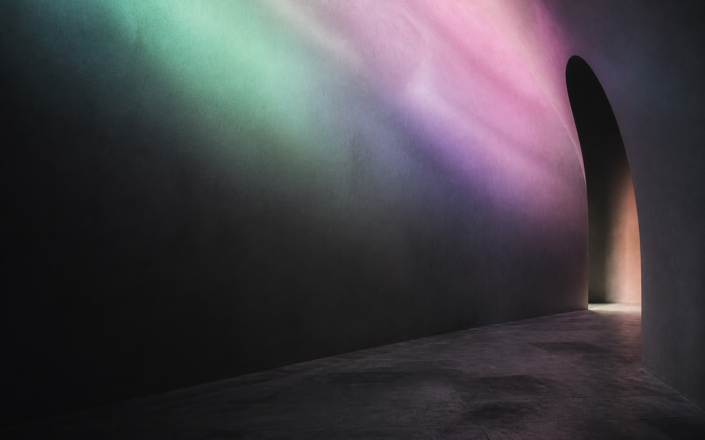

GLP‑1 · дизайн-система и генерация фотографий
Версия 1.0 · 27 августа 2026
Это публичный production-протокол для людей и AI-агентов, которые создают новые фотографии и обложки для «GLP‑1 — курс на устойчивость». Он описывает не один шаблон, а грамматику системы: как выбирать сцену, кастинг, свет, кадр, цвет, носитель и режим проверки.
Главная мысль: мы не иллюстрируем «похудение». Мы показываем устойчивую жизнь: движение, силу, обычную еду, отдых, внимание к себе и спокойную компетентность.
1. Что должна передавать система
Дизайн собирает вместе пять качеств:
- Устойчивость. Не рывок и не преображение, а ритм, опора и повторяемые действия.
- Человечность. Реальная кожа, обычные тела, настоящее усилие, непостановочные паузы.
- Современность. Молодая editorial-фотография без визуального клише «медицинского wellness».
- Глубина. Фотография имеет среду, воздух, тактильность и понятный источник света.
- Прикладность. Кадр заранее оставляет место для текста и переживает кадрирование под несколько носителей.
Система не должна выглядеть как клиника, аптека, диетический марафон, агрессивный fitness-челлендж или премиальная spa-реклама.
2. Две визуальные среды
CARE · светлая
Светлая среда нужна для утренних, вводных и более мягких материалов.
- Высокий ключ, белая или молочная студия, мягкий большой источник света.
- Белый не выгорает; контактные тени остаются чёткими.
- Мятный, лавандовый и мягкий розовый живут в одежде, предметах и акцентах, а не в воздушной цветной дымке.
- Одежда функциональная: топ, свободные брюки или легинсы, белые кроссовки; без случайных логотипов.
- Настроение: спокойная готовность, не беззаботная эйфория.
STRENGTH · тёмная
Тёмная среда нужна для силовых, основных и более жёстких материалов.
- Глубокий угольный фон, архитектура зала, шкафчики, стекло, текстиль, коврик или окно.
- Цветной свет ощущается физическим: свет за кадром, отражение, мягкое свечение, а не наложенный градиент.
- Кожа и еда не заливаются мятным или розовым: они остаются естественными.
- Контраст собирается постепенно: слои тени, бликов, размытия и матовой плёнки; жёсткий диагональный gradient cut запрещён.
- Настроение: опора, собранность, тихая сила; не агрессия и не бодибилдинг.
3. Палитра и типографика
Канонические цвета:
- Ink
#111111— тёмная база и текст. - Mint
#BCEBD0— ведущий сигнал заботы и движения. - Lavender
#D3C8EE— опорный цвет. - Pink
#EFB4CE— живой акцент. - Paper
#F7F5F0— тёплая светлая поверхность. - White
#FFFFFF— рабочий свет, но не единственный фон.
Цвет имеет роль. Не нужно одновременно красить всё мятой, лавандой и розовым. В кадре достаточно одного ведущего цвета и одного вторичного сигнала.
Типографические роли:
- Commissioner Variable — display, название курса, крупные заголовки обложек.
- Golos Text Variable — служебные строки, подписи, вторичная иерархия.
- Manrope — продуктовая оболочка и длинная инструкция.
Шрифты не запекаются в фотографию. Фотография всегда генерируется без текста, логотипа, UI, рамки и watermark.
4. Обложка как система слоёв
Обложка не рисуется одним плоским кадром. Она собирается в конструкторе.
- Фотография. Независимый слой: масштаб, фокус, contain/cover, размер и смещение за край холста.
- Защита контраста. Мягкая тень, свечение, дымка, плашка или split.
- Пастельное поле. Физический off-canvas light falloff; не жёсткая цветная маска на коже.
- Плашка. Solid, gradient или mesh; цвет подчиняется ролям палитры.
- Aura-траектории. Одна крупная линия масштаба носителя, а не мелкий декор.
- Матовая микроплёнка. Точки и оптическая фактура с низкой видимостью; не конфетти.
- Типографика. Локап GLP‑1, название материала, тип и служебная строка.
- Контекст. Обложка обязана пройти проверку в реальной карточке кабинета.
Ключевое правило: не просите генератор нарисовать готовую обложку. Генерируйте чистую фотографию, а все слои бренда добавляйте детерминированно в конструкторе.
5. Роли фотографий
Каждый кадр перед генерацией получает одну ведущую роль:
- Portrait. Узнаваемый эксперт или ведущий; лицо читается только после отдельного identity-гейта.
- Movement. Движение, подготовка, пауза после практики, шаг, коврик, кроссовок, дверной проём.
- Strength. Заземлённая стойка, функциональное усилие, собранный взгляд; без агрессии и гипертрофии.
- Space. Пустая студия, стекло, текстиль, шкафчики, окно, оборудование. Среда может быть главным героем.
- Audio. Наушники, дневник, скамья, вечерний свет, тихий интерьер.
- Nutrition. Нормальная сытная еда, приготовление, руки, сервировка. Никаких крохотных порций и «диетического» реквизита.
- Objects. Коврик, гантель, бутылка воды, полотенце, телефон, наушники и еда как тактильный still life.
Не смешивайте в одном кадре все роли. Сильная серия собирается из кадров с ясной функцией.
6. Кастинг и лица
Есть три режима.
Реальный человек
Используйте только разрешённые референсы того же человека. Референс — это доказательство личности, а не «вдохновение».
Обязательно сохраняются:
- геометрия лица, расстояние между глазами, нос, губы, челюсть и линия волос;
- возраст, асимметрия, цвет кожи и естественная текстура;
- форма тела, пропорции, поза и распределение веса;
- причёска, татуировки, шрамы, веснушки, пирсинг и другие устойчивые признаки;
- сторона, масштаб, ориентация и обхват каждой татуировки.
Запрещено молча омолаживать, «улучшать» тело, менять этнически считываемые черты, зеркалить татуировки или добавлять аксессуары.
Повторяющийся синтетический персонаж
Сначала создайте и утвердите identity board: крупный план, три четверти, профиль, полный рост и нейтральная поза. После утверждения этот набор становится единственным identity source. Не смешивайте в одной серии несколько похожих синтетических лиц.
Безличная сцена
Если личность не нужна, покажите затылок, силуэт, руки, деталь одежды, движение за стеклом или пустую среду. «Без лица» не означает «без анатомии»: руки, суставы, тени и точки контакта всё равно проверяются.
7. Как готовить задачу для AI-агента
До запуска генератора агент должен записать:
role— portrait, movement, strength, space, audio, nutrition или objects.track— care_light или strength_dark.carrier— 16:10, 16:9, 4:5 или 1:1.copy_side— left, right или none.subject— real_authorized, synthetic_locked или faceless.action— одно наблюдаемое действие.environment— конкретная студия или интерьер.light— направление, мягкость, цвет и поведение теней.wardrobe_props— одежда и не более двух важных предметов.preserve— неизменяемые свойства.exclude— конкретные запреты.status— generation, review_candidate или approved.
Если не определены identity source, носитель и сторона под текст, генерацию не начинают.
8. Мастер-формула промпта
Рабочий prompt лучше собирать как короткую production-спецификацию, а не как литературное описание.
Create one production-ready [CARRIER] editorial photograph for the GLP-1 course.
ROLE AND TRACK
[ROLE]. Use the [CARE LIGHT / STRENGTH DARK] visual environment. The emotional tone is calm readiness, grounded effort and sustainable everyday practice — never transformation marketing.
SUBJECT
[REAL AUTHORIZED PERSON / LOCKED SYNTHETIC CHARACTER / FACELESS ADULT]. [ACTION AND POSE].
IDENTITY LOCK
[PRESERVE FACE, AGE, SKIN TONE, BODY PROPORTIONS, HAIR, DISTINCTIVE MARKS, TATTOOS AND THEIR EXACT SIDES]. Change only [ALLOWED CHANGE].
SCENE AND LIGHT
[ENVIRONMENT]. [LIGHT DIRECTION, SOFTNESS AND COLOR]. Keep skin and food naturally colored. Pastel light must feel physically present in the scene, never like a flat color overlay.
COMPOSITION
Place the subject in [SUBJECT ZONE]. Leave clean copy space on the [COPY SIDE]. Keep the full required anatomy and important props inside a 7% safe zone. Preserve useful visual information for alternate 16:9, 16:10, 4:5 and 1:1 crops.
FINISH
Natural skin texture, tactile fabric, coherent contact shadows, realistic perspective, controlled highlights, editorial photography, sRGB-ready color, no baked typography.
EXCLUDE
No text, logo, UI, frame, collage, watermark, pills, syringes, scales, measuring tape, before/after language, medical-result imagery, body reshaping, beauty retouch, plastic skin, anatomy distortion, extra fingers or limbs, mirrored tattoos, invented accessories, hard gradient cuts, generic spa mood or aggressive bodybuilding.Для реального человека критические identity-ограничения повторяются на каждой итерации.
9. Готовые prompt-шаблоны
CARE · движение в светлой студии
Create one production-ready 16:10 editorial movement photograph for the GLP-1 course. Use a bright seamless white or warm-paper studio with soft large-source daylight and crisp believable contact shadows. Show one authorized adult or one previously approved synthetic course character in a stable standing mobility action. Functional wardrobe: one mint or lavender garment, a neutral supporting garment and white trainers. Place the subject in the right 42% and leave clean copy space on the left. Keep the full head, hands and feet inside a 7% safe zone. Natural skin, ordinary athletic proportions, tactile fabric, calm readiness. No text, logos, extra people, beauty retouch, body transformation cues, cropped limbs, yellow-dominant palette, dark background or decorative gradient.STRENGTH · заземлённая сила
Create one production-ready 16:10 editorial strength photograph for the GLP-1 course. Show one authorized adult or locked synthetic character in a grounded shoulder-width stance or controlled functional strength action. Preserve believable weight distribution, shoulder and hip axes, joints, hands, feet and equipment contact. Deep charcoal studio or restrained gym architecture; one soft off-camera mint, lavender or pink light source creates a physical reflection and gradual falloff. Skin remains naturally colored. Place the subject in the left 43% and keep the right side quiet for typography. Calm authority and functional effort; no aggression, bodybuilding bulk, sweat-advertising, neon gym, hard gradient, extra people, text or anatomy distortion.Тёмная безличная сцена
Create one cinematic but believable 16:10 editorial photograph for the GLP-1 course. The environment leads: dark studio architecture, ribbed glass, a doorway, textile, mat or window. Include at most one partially obscured adult as a secondary human scale cue — back view, hands, silhouette or motion behind glass — with believable anatomy and contact shadows. Use deep charcoal values with one soft physical pastel reflection, gradual falloff and restrained grain. Leave a large quiet text zone. No readable generic face, horror mood, clinical cues, neon, hard diagonal gradient, text, logo, watermark or impossible body fragments.Тихий интерьер
Create one production-ready 16:10 editorial interior photograph for the GLP-1 course. Show a quiet contemporary training or recovery space after practice: ribbed glass, soft textile, bench, locker rhythm, mat or window light. No person is required. Compose one clear spatial depth sequence and reserve a clean side for typography. Deep neutral charcoal or warm paper base with one restrained mint, lavender or pink reflection that behaves like real light. Tactile materials, coherent perspective, controlled highlights and subtle grain. No luxury spa, medical room, signage, text, logo, clutter, hard gradient or generic 3D render look.Аудио · still life
Create one production-ready 16:10 editorial still life for an audio material in the GLP-1 course. Use headphones as the primary object with one or two supporting objects such as a notebook, phone, towel or water bottle. Arrange the group on the right and leave clean copy space on the left. Use either a bright paper studio or a dark tactile interior with one physical pastel reflection. Real rubber, textile, paper, glass and metal texture; crisp contact shadows; calm evening attention. No people, food, packaging, labels, pills, syringes, scales, text, logo, watermark, gradient backdrop or clutter.Питание · обычная сытная еда
Create one production-ready 16:10 editorial food photograph for the GLP-1 course. Show a normal satisfying meal or believable preparation moment: recognizable protein, grain or bread, vegetables or fruit, water and ordinary tableware. The portion must look normal, not miniature or diet-coded. Keep food naturally colored and appetizing; pastel color may appear only in a mat, napkin, dish or reflected light. Reserve a clean side for typography. No people unless hands are explicitly requested, no pills, syringes, scales, calorie numbers, measuring tape, before/after cues, tiny portions, packaging, labels, text, logo, watermark or glossy commercial food fakery.Identity-preserving нейрофотосет
Create one new photographic scene using only the supplied authorized references of the same adult person. Preserve the exact recognizable identity: facial geometry, eye spacing, nose, lips, jaw, hairline, apparent age, skin tone, natural asymmetry, body shape and all stable distinctive marks. Preserve every visible tattoo or piercing with its correct side, placement, scale, orientation and wrap; do not mirror or invent details. Change only the requested scene, wardrobe, action and lighting. Keep anatomy, weight distribution, clothing seams, perspective, occlusion, contact points and shadows believable. Natural skin texture and coherent grain. No beautification, younger look, body reshaping, generic substitute face, invented accessories, plastic skin, extra fingers or limbs, text or watermark.10. Работа с референсами
Для identity-preserving задачи нужны не «лучшие фото», а достаточные доказательства:
- фронтальное лицо в нейтральном свете;
- три четверти и профиль;
- полный рост для формы тела и пропорций;
- крупные кадры татуировок, пирсинга и других признаков;
- минимум один кадр в похожей позе, если меняется механика тела.
Референсы разных людей не смешиваются. Если нужной стороны тела или татуировки не видно, агент не изобретает её, а запрашивает дополнительный референс или меняет кадр.
11. Покадровый workflow
- Определить функцию. Записать role, track, carrier и copy side.
- Проверить права. Подтвердить, что identity references можно использовать для этой задачи.
- Разделить change/preserve. Один список описывает изменение; второй — всё, что нельзя двигать.
- Собрать один prompt. Не десять противоречивых сцен, а одна production-спецификация.
- Создать 4–8 кадров. Менять только композицию или микродействие, не всю арт-дирекцию.
- Выбрать anchor. Один кадр становится эталоном света, кожи, контраста, зерна и цвета серии.
- Провести критические гейты. Лицо, анатомия, татуировки, тени, одежда, геометрия среды.
- Собрать серию. Остальные кадры сравниваются с anchor по экспозиции, балансу белого, коже, зерну и глубине чёрного.
- Проверить носители. Примерить 16:10, 16:9, 4:5 и 1:1; не лечить плохой кадр экстремальным crop.
- Передать в review. Статус после генерации —
review_candidate, неapproved.
Для точечного исправления меняйте только один смысловой параметр за итерацию. Если после широкой правки появились каскадные артефакты, вернитесь к последней приемлемой версии.
12. Контроль качества
Любой critical fail блокирует кадр:
- личность изменилась или заменилась более типовым лицом;
- искажены глаза, зубы, кисти, пальцы, стопы, суставы или торс;
- без запроса изменились возраст, форма тела, цвет кожи или лица;
- сломаны швы одежды, фон, тени, перспектива, окклюзии или точки контакта;
- добавлены текст, аксессуары, логотипы, части тела или предметы, которых не было в брифе.
После критических гейтов каждый кадр оценивается по шкале 0–2:
- likeness;
- anatomy;
- skin;
- light;
- color;
- composition;
- integration;
- brief fidelity;
- series consistency.
Ни одна применимая оценка не может быть равна 0. Для production-кадра likeness, anatomy, brief fidelity и series consistency должны быть равны 2.
13. Как генерировать серию, а не набор случайных картинок
Один anchor-кадр фиксирует:
- среду и фон;
- направление и жёсткость света;
- баланс белого и глубину чёрного;
- контраст, насыщенность и зерно;
- одежду, предметы и их материалы;
- масштаб человека и логику свободного поля.
На следующей итерации меняется только одно: ракурс, микродействие, крупность или copy side. Крупная смена сцены, света, одежды и позы одновременно создаёт новую фотосессию, а не продолжение.
Для набора из 6–9 кадров полезно иметь:
- 1 широкий establishing shot;
- 2 полноростовых кадра с разным copy side;
- 1 кадр три четверти;
- 1 деталь рук, кроссовка, коврика или предмета;
- 1 кадр после действия;
- 1 пустая среда или faceless-кадр;
- 1 альтернативное кадрирование для mobile.
14. Носители и safe zones
Базовый мастер — landscape 16:10. Он должен давать поле для 16:9 и кабинета. Для движения дополнительно нужен 4:5-мастер, потому что механический crop широкого кадра часто ломает позу.
Минимальные master-размеры:
- 16:10 — 2400×1500 px;
- 16:9 — 2560×1440 px;
- 4:5 — 2160×2700 px;
- 1:1 — 2048×2048 px.
Для человека или важного предмета держите минимум 7% от края. Важная анатомия не должна зависеть от outpainting. Если кадр изначально обрезал ноги, кадрирование их не вернёт.
Для свободного поля оставляйте 36–45% площади кадра. Важные детали не помещаются в предполагаемую зону текста.
15. Чего не должно быть в фотобанке
- Случайные глянцевые блондинки и «идеальные» fitness-тела.
- Доктора в халатах, шприцы, таблетки, весы и сантиметровые ленты.
- До/после, визуальные обещания похудения, открытое измерение талии.
- Крохотные порции, пустая тарелка, стыд вокруг еды и «диетическая» эстетика.
- Агрессивный спорт, бодибилдинг, сильно выставленный пот и наказывающее усилие.
- Слишком мягкий spa/wellness-мир с камнями, свечами, бежевым туманом и лотосами.
- Кислотный неон, глянцевое candy glass, жёсткие градиенты и наложенный цвет на коже.
- Случайные логотипы, текст, watermark, UI, рама и collage внутри фотографии.
16. Формат передачи кадра
Каждый принятый кадр передаётся пакетом:
- исходный PNG/JPEG в sRGB;
- точный prompt и negative prompt;
- название и версия модели/инструмента, если они известны;
- seed и параметры, если инструмент их отдаёт;
- ID разрешённого reference set без публикации самих приватных референсов;
- role, track, carrier, copy side и status;
- результат QA по каждому пункту 0–2;
- короткая заметка: что изменилось от предыдущей версии.
Имя файла:
YYYY-MM-DD_glp1_[role]_[subject-or-scene]_[track]_vNN.pngПример:
2026-08-27_glp1_movement_elena_doorway_strength_dark_v01.pngТолько ASCII, lower-case, цифры, _, - и точка. Никаких final, new, copy и кириллицы в имени файла.
17. Статусы и права
generation— сырой результат.review_candidate— прошёл технические гейты, но не утверждён человеком.approved— человек с правом утверждения одобрил кадр и его конкретное использование.rejected— кадр не используется; причина сохраняется.archive— исторический материал, не текущий канон.
Автоматическая генерация не даёт статус approved. Статус кадра и разрешение на публикацию — два разных решения.
18. Как передать задачу другому агенту
Передайте агенту:
- этот гайд;
agent-brief.json;- разрешённые identity references или approved synthetic identity board;
- одну конкретную задачу в формате
role + track + carrier + action + copy side; - папку для новых results.
Готовая инструкция:
Read the attached GLP-1 visual generation guide and agent-brief.json completely. Treat them as the production contract. Before generating, return a short structured brief with role, track, carrier, copy side, subject mode, change, preserve and exclude. Do not start if authorization for a real person's identity references is unclear. Generate clean photography without text or branding. Change one design variable per iteration. Reject any frame that fails identity, anatomy, scene geometry or brief fidelity. Deliver the accepted image with a manifest containing prompt, negative prompt, model/tool name, parameters, reference-set ID, status and QA scores. Never mark an image approved automatically.19. Чек-лист перед загрузкой в конструктор
- [ ] Кадр без текста, логотипа, UI и watermark.
- [ ] Указаны role, track, carrier, copy side и status.
- [ ] Для реального человека проверены права и identity.
- [ ] Нет critical fails по лицу, анатомии, одежде, теням и геометрии.
- [ ] Кожа и еда сохраняют естественный цвет.
- [ ] Цветной свет выглядит физическим, а не фильтром.
- [ ] Поза или предмет не обрезаны и имеют 7% safe zone.
- [ ] Есть 36–45% свободного поля под текст.
- [ ] Фото выдерживает нужные crop-тесты.
- [ ] Имя файла соответствует ASCII-стандарту.
- [ ] Рядом лежит manifest с prompt, параметрами, reference-set ID и QA.
- [ ] Кадр получил
review_candidate;approvedвыдаёт только уполномоченный человек.
20. Короткая формула
Функция кадра → разрешённая личность → одна сцена → физический свет → свободное поле → чистая фотография → критические гейты → примерка на носителях → только потом review.





